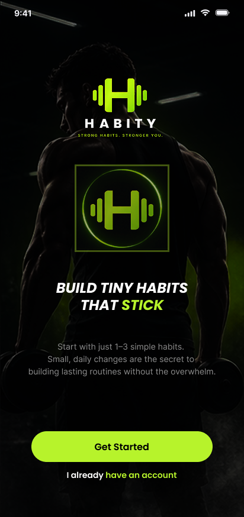
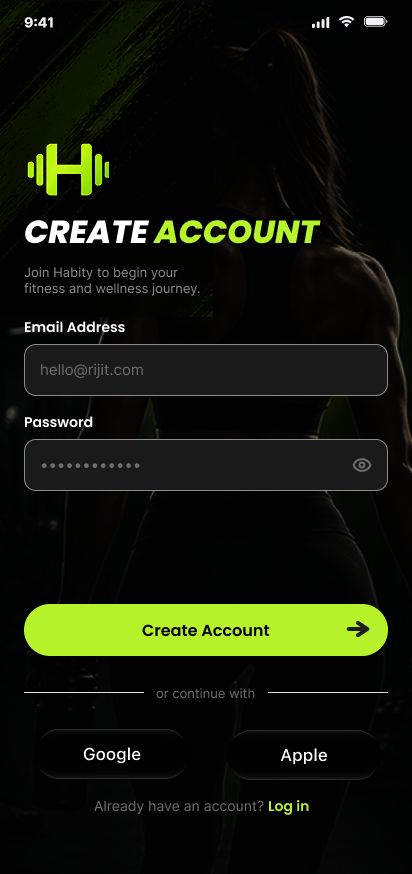
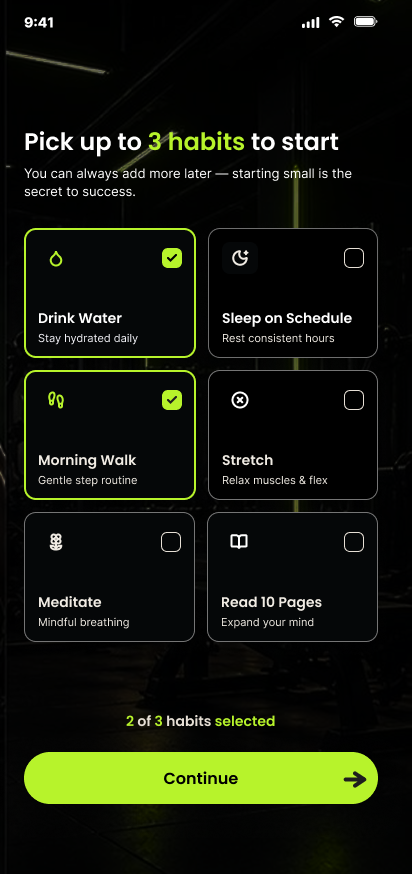
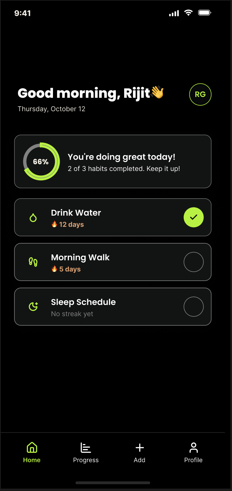
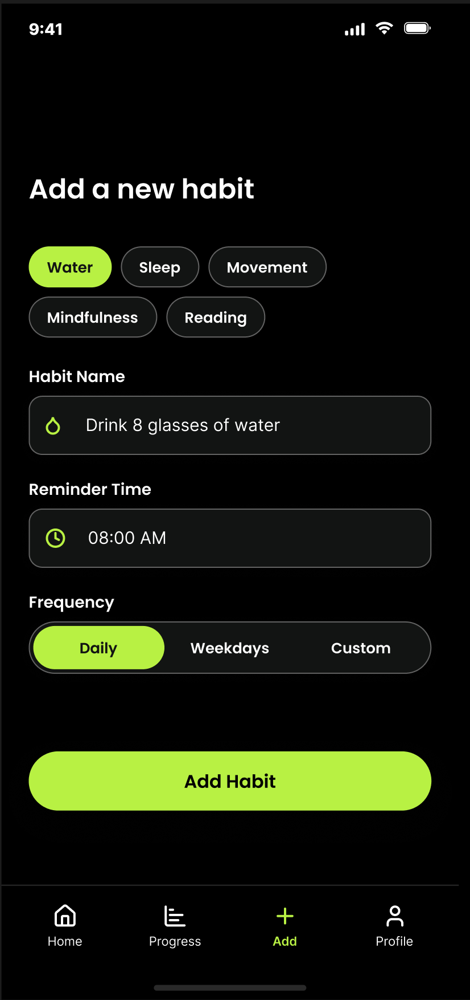
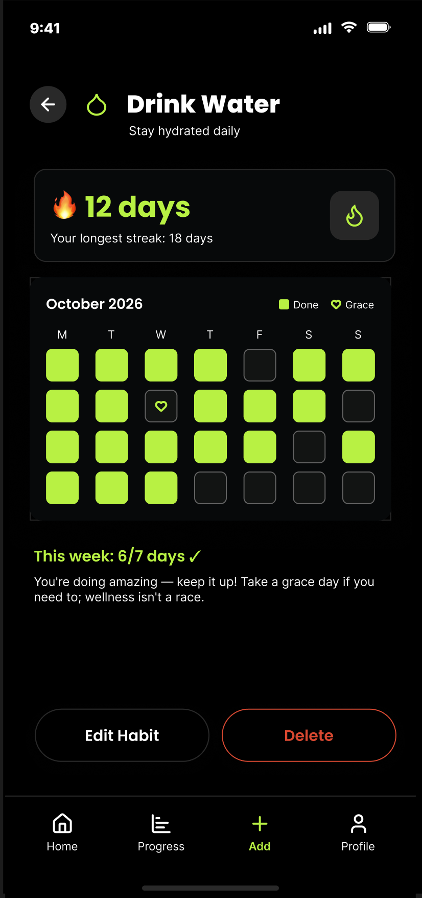
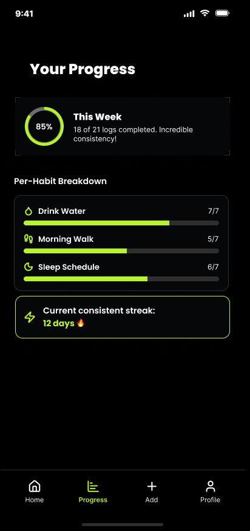
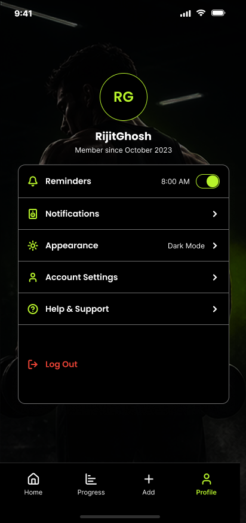

Overview
People want healthy habits such as drinking water, sleeping on time, walking and reading, but most quit within weeks. Habitly lets users start with just 1 to 3 tiny habits, check them off in seconds, and see streaks and progress so they stay motivated without pressure.
| Role | UI/UX designer: research, UX, UI, prototyping, testing |
|---|---|
| Client | Self-initiated, for the iStudio UI/UX Design Internship |
| Industry | Health and wellness |
| Challenge | Health and Habits |
| Platform | Mobile app (iOS and Android) |
| Tools | Figma for design and prototype, FigJam for research, flows and journey map |
The problem
Young adults want to build healthy daily habits but lose motivation fast. Many habit apps feel like another chore: too many options, too much setup, and guilt after a missed day.
Goal
Make starting easy, daily check-ins take under 10 seconds, and progress feel rewarding.
Challenges
Overwhelm from tracking too much, broken streaks, many habit types, a single designer and a short timeline.
Success metrics
Onboarding in under 1 minute, check-in in 2 taps or fewer, new habit in under 30 seconds, 2 of 3 testers finish every task unaided.
Discover
Understanding the people and the problem before drawing a single screen.
Survey and interviews
Five survey questions plus quick interviews with students and young professionals:
- Which habits do you want to build?
- How long do you usually keep a habit before quitting?
- What makes you quit?
- Which habit apps have you used, and what did you dislike?
- What would keep you going?
Respondents
30 participants* aged 18–30
Top habit wanted
40%* prioritized regular exercise
Main reason for quitting
43%* cited loss of motivation
What users said
Sample themes: busy routines, missed-day frustration, and a need for simple progress tracking.
Secondary research
- A 2009 study by Phillippa Lally and colleagues at University College London found a new habit took 66 days on average to form, with a range from about 18 to 254 days. Apps must keep people motivated for weeks, not days.
- The same study found missing a single day did not significantly harm habit formation, so streaks should be forgiving.
- BJ Fogg’s Tiny Habits method says starting very small makes behaviour easier to keep, which led to Habitly’s limit of 3 starter habits.
Competitive analysis
| App | What works | What limits it |
|---|---|---|
| Headspace | Calm visuals, guided sessions, clear daily routine | Centred on meditation and sleep; many features are paid |
| Google Fit | Simple activity goals, automatic movement tracking | Mostly activity; little support for habits like water, reading or sleep schedule |
| Habitica | Very motivating game rewards | Can feel cluttered and slow to learn; the game theme does not suit everyone |
Opportunity: a simple, focused app that covers different habit types, starts small, and rewards consistency without a complicated game.
Key insights
Start small
Starting big feels overwhelming, so the app caps starter habits at 3.
Remind gently
Forgetting breaks habits, so every habit has a reminder time.
Show progress
Streaks, a weekly percentage and a calendar heatmap keep people going.
Forgive misses
One missed day should not feel like failure, so the language stays encouraging.
Define
Problem statement
Young adults who want to build healthy daily habits lose motivation quickly because existing apps feel overwhelming or complicated. How might we help them start small, stay consistent and see their progress in a simple, rewarding way?
Persona: Aarav Sharma, 21, B.Tech student
Goals
Drink more water, sleep on time, walk every morning, read 10 minutes a day.
Frustrations
Forgets to log, gets discouraged when a streak breaks, finds most habit apps crowded.
Needs
A quick check-in, gentle reminders, visible progress and small goals.
“I want to build good habits, but I always give up when it starts to feel like work.”
User journey
| Stage | Action | Feeling | Opportunity |
|---|---|---|---|
| Discover | Downloads Habitly | Curious, skeptical | Clear promise on the welcome screen |
| Sign up | Creates an account | Impatient | Short form, Google and Apple sign-in |
| Choose habits | Picks up to 3 | Relieved | Habit cards and a selection counter |
| Daily use | Checks off habits | Satisfied | Progress ring, one-tap check-in |
| Missed day | Forgets a habit | Guilty | Encouraging message |
| Progress | Views streaks | Proud | Heatmap and weekly summary |
Feature priorities
Must-have
Sign up and log in, starter habits, home checklist, add habit, streaks, progress screen.
Nice-to-have
Habit detail calendar, edit or delete, profile settings, forgot password, social sign-in.
Later
Friends, badges, widgets, wearable sync, light theme.
User flows
Sign up and start
Daily check-in
Add a habit
Design
Dark and energetic, so the lime green of progress stands out against a calm, focused background.
Colour
Near black
Focus, premium
Lime
Growth, energy
Off-white
Readable text
Soft grey
Secondary text
Typography and design system
Bold italic headlines for energy and a clean sans-serif for body text. Colour styles, text styles and components with variants are saved in Figma: primary and secondary buttons, input fields, habit cards, checkbox, bottom navigation, progress ring and toggles.
Final screens

Welcome

Sign up

Choose habits

Home

Add habit

Habit detail

Progress

Profile
Decisions backed by research
| Screen | Decision | Why |
|---|---|---|
| Welcome | One promise, one button | Gets users in without overwhelm |
| Choose habits | Cards with a “2 of 3 selected” counter | Starting small prevents quitting |
| Home | Progress ring and one-tap checklist | Daily use takes seconds |
| Add habit | Category chips, reminder, frequency | Reminders fight forgetting |
| Habit detail | Streak, longest streak, calendar heatmap | Visible progress motivates |
| Progress | Weekly percentage, per-habit bars | A clear overview at a glance |
| Profile | Reminders, notifications, appearance | Control and personalisation |
Accessibility
- Lime on near-black gives strong contrast for buttons and key numbers.
- Buttons carry text labels, not icons alone.
- Small grey helper text was checked for size and brightness.
- Tap targets in the bottom navigation are consistent.
Prototype and testing
Screens are linked in Figma so the app can be tapped through like a real product, with smooth transitions and button feedback.
Test plan
Three participants, four tasks: create an account and choose two habits; mark Drink Water done; add “Read 10 pages” with a reminder; find the streak for one habit.
| Problem observed | Fix made |
|---|---|
| Users could miss the login option when moving between sign-up and login. | Made the Log in link more visible and added a dedicated login screen. |
| Users could be unsure whether a habit was marked complete. | Added a clear completion indicator and stronger visual feedback. |
Task completion
3/3 participants
Example: all participants completed the four assigned tasks.
Most difficult task
Finding habit streaks
Example: improve the visibility of streak information.
Next improvement
Clearer progress feedback
Make completion states and progress indicators easier to understand.
Results and learnings
Habitly brings onboarding, daily habit check-ins, and progress tracking into one simple mobile experience. The prototype is designed to help users start small and build consistent routines.
Research shapes design
A focused starter selection helps keep onboarding manageable and encourages users to begin with a few habits.
Details matter
Clear completion states, consistent streak information, and visible feedback make daily check-ins easier to understand.
Test with real people
Usability testing can reveal confusing navigation, unclear actions, and opportunities to improve the experience.
Next steps
Friends and sharing, badges, widgets, a light theme, smarter reminders and more accessibility work.